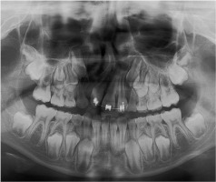

Research Areas
Craniofacial Growth
For orthodontic and craniofacial surgical interventions, estimation of the timing of peak growth and/or the amount of remaining growth is important for planning treatment.

New Approaches to Muscle Architecture and Function
To study the evolution of feeding, grasping, and locomotion, it is important to be able to accurately estimate muscle forces and their direction of action. In collaboration with Carol Ward and Casey Holliday (University of Missouri Department of Pathology and Anatomical Sciences), we are using contrast-enhanced CT imaging to explore the internal architecture of muscles in exceptional detail.
Biomechanics and Evolution of the Archosaur Head
In collaboration with Casey Holliday (University of Missouri), we are studying the evolution of cranial kinesis across the non-avian theropod dinosaur to bird transition.
Tools for studying mouse locomotion
Mouse locomotion is commonly studied in models of human musculoskeletal disease and exercise physiology. Traditional methods for tracking joint movements for the study of locomotor kinematics is labor intensive and requires expensive hardware. We sought to speed up the process with Deep Learning using free software and consumer grade hardware.
Skeletal Morphology in High-Activity Mice
Although “exercise builds strong bones”, genetics play a large part in bone’s response to exercise. I have worked toward an animal model to investigate the relative roles of these two key determinants of skeletal form.